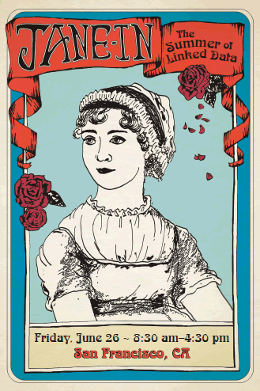

Second Jane-athon
The second Jane-athon, the Jane-in, took place on June 26, 2015 at ALA Annual in San Francisco, USA.
The aim was to build upon the curated r-ball from the first Jane-athon.
Outline
- 07:30 Registration
- 08:30 Introductions, Outline of the day, Set-up, and Brief review of RIMMF functionality (PDF of presentation slides)
- 09:20 RIMMFing Jane resources + Lunch
- 13:00 Feedback on the day so far
- 13:30 Discussion on results of combining r-balls (PDF of presentation slides) + Break
- 14:30 RDA and Linked Data
- 16:00 Next steps
- 16:30 End
Team
Core organizers
- Gordon Dunsire (JSC)
- James Hennelly (ALA Publishing)
- Diane Hillmann (MMA)
- Deborah Fritz (TMQ)
- Richard Fritz (TMQ)
- Jon Phipps (MMA)
The Coaches
- Barbara Bushman (National Library of Medicine)
- Kathy Glennan (JSC)
- Ebe Kartus (JSC)
- Bill Leonard (JSC)
- Robert Maxwell (Brigham Young University)
- Jean M. Pajerek (Cornell Law Library)
- Thurstan Young (British Library)
- Plus Deborah, Diane, and Gordon
The Team Leaders
- Thomas Brenndorfer (Guelph Public Library)
- Zora Breeding (Vanderbilt University)
- Greta de Groat (Stanford University)
- John Hostage (Harvard University)
- Kelley McGrath (University of Oregon)
- Melanie Polutta (Library of Congress)
- Lori Robare (University of Oregon)
- Adam Schiff (University of Washington)
- Jen Talley (University of Michigan)
- Christine Todd (National Library of New Zealand)
- Susan Wynne (Georgia State University)
The Helpers
- Judy Kuhagen (JSC)
- Melissa Wood (ALA Publishing)
Survey results
An online survey of participants was carried out shortly after the Jane-In. Results are given in the Participant Evaluation of Jane-In, Annual 2025.
Announcements, blogs, etc.
- Announcement: Jane-in, the Summer of Linked Data: the Jane-athon comes to San Francisco
- Elsevier Labs: Why the Jane-athon -- and the Jane-athon format -- matters (Mike Lauruhn)
- Metadata Matters: What’s up with this Jane-athon stuff? (Diane Hillmann)
- Facebook: American Library Association post 14 May 2015
- tumblr: American Library Association: Jane-in, the Summer of Linked Data: the Jane-athon comes to San Francisco
- tumblr: Darien Library: Jane-in, the Summer of Linked Data: the Jane-athon comes to San Francisco
